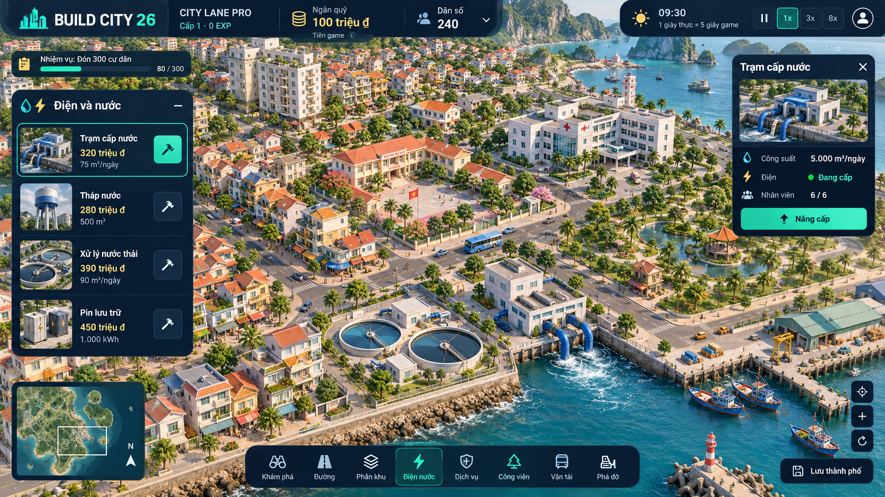
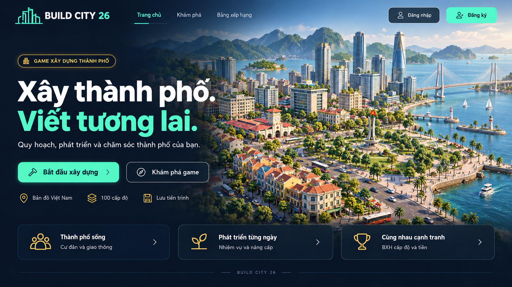
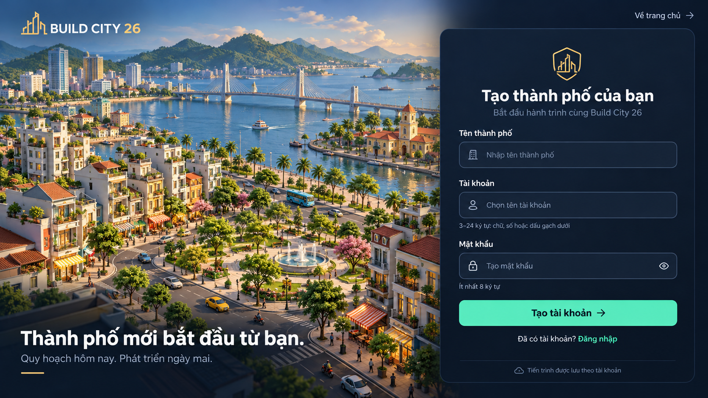
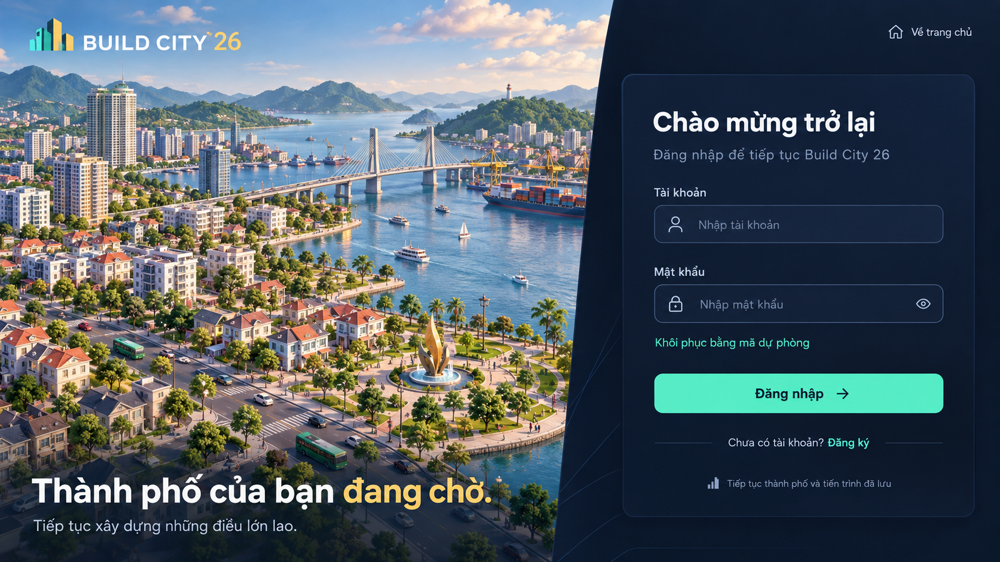

Xem thiết kế giao diện mới
Số liệu trong ảnh minh họa. Khi lập trình dùng dữ liệu thật từ core/catalogue.




Mã ảnh và tọa độ có trong manifest.json / DANH_MUC_CONG_TRINH.csv. Dùng vùng frame thực tế, không chia cứng atlas thành 9 ô bằng nhau.